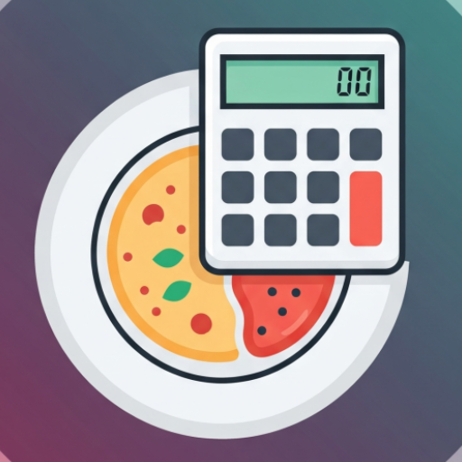

MealCalculator – Delete your account
App by Juergen Zimmer · Deutsche Version
An account exists only if you signed in with Google to sync your food items. Without signing in, all data stays on your device and no account is created.
Option 1: in the app (immediate)
- Open MealCalculator and tap the cloud icon at the top right.
- Choose Delete account… and confirm with Delete.
- Sign in with Google once more to confirm it is you.
Option 2: by email (if you no longer have the app)
Send an email from the Google account you used in the app to jzimmer1000@gmail.com with the subject MealCalculator account deletion. We delete the account within 30 days and confirm by email.
What is deleted
- Your account in Firebase Authentication (user ID, email address, name, profile picture URL).
- All food items stored in the cloud for your account.
Nothing is kept after deletion. Food items stored locally on your phone are not affected; remove them by clearing the app's storage or uninstalling the app.
Konto löschen (Deutsch)
Ein Konto existiert nur, wenn Sie sich zur Synchronisation mit Google angemeldet haben. Ohne Anmeldung bleiben alle Daten auf Ihrem Gerät und es wird kein Konto angelegt.
Möglichkeit 1: in der App (sofort)
- MealCalculator öffnen und oben rechts auf das Wolken-Symbol tippen.
- Konto löschen… wählen und mit Löschen bestätigen.
- Zur Bestätigung erneut mit Google anmelden.
Möglichkeit 2: per E-Mail (falls Sie die App nicht mehr haben)
Senden Sie von dem in der App verwendeten Google-Konto eine E-Mail an jzimmer1000@gmail.com mit dem Betreff MealCalculator Konto löschen. Wir löschen das Konto innerhalb von 30 Tagen und bestätigen dies per E-Mail.
Was gelöscht wird
- Ihr Konto in Firebase Authentication (Nutzer-ID, E-Mail-Adresse, Name, URL des Profilbilds).
- Alle für Ihr Konto in der Cloud gespeicherten Lebensmittel.
Nach der Löschung wird nichts aufbewahrt. Lokal auf dem Telefon gespeicherte Lebensmittel sind nicht betroffen; Sie entfernen sie, indem Sie den App-Speicher leeren oder die App deinstallieren.